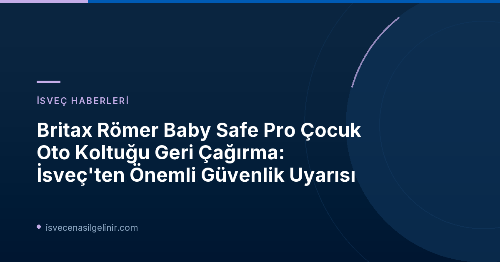

Neden Bir Geri Çağırma Yapıldı?
İsveç'in saygın tüketici dergisi Råd&Rön tarafından gerçekleştirilen bağımsız çarpışma testleri, Britax Römer Baby Safe Pro çocuk oto koltuğunun Vario Base 5Z tabanı ile birlikte arkaya yatırılmış pozisyonda kullanılırken ciddi bir güvenlik riski taşıdığını ortaya koydu. Yapılan ön çarpışma testlerinde, koltuğun emniyet kemeri tokasının gevşediği ve test mankeninin koltuktan fırladığı gözlemlendi. Bu durum, gerçek bir kazada çocuğun ağır yaralanma riskini beraberinde getiriyor.
Önemli Güvenlik Bulguları
- Sorun: Britax Römer Baby Safe Pro oto koltuğunun arkaya yatık konumda Vario Base 5Z ile kullanımında ön çarpışma testlerinde kemer tokası gevşemesi.
- Risk: Gerçek bir kazada çocuğun koltuktan fırlayarak ciddi şekilde yaralanma tehlikesi.
- Testi Yapan: İsveç tüketici dergisi Råd&Rön.
Hangi Modeller ve Üretim Tarihleri Etkilendi?
Britax Römer firması, geri çağırmanın "sınırlı sayıda" ürünü kapsadığını belirtiyor. Geri çağırma kararı, yalnızca belirli üretim tarihleri arasındaki koltuklar için geçerlidir. Bu durum, tüm Britax Römer Baby Safe Pro kullanıcılarının panik yapmaması, ancak ürünlerinin üretim tarihini kontrol etmesi gerektiği anlamına geliyor.
| Ürün Modeli | Etkilenen Üretim Tarihleri Aralığı | Güvenli Kullanım Koşulları |
|---|---|---|
| Britax Römer Baby Safe Pro (Vario Base 5Z ile birlikte) | 26 Aralık 2025 - 30 Eylül 2026 | Dik pozisyonda taban ile veya tabansız, aracın kendi emniyet kemeriyle. |
Ürün Üretim Tarihini Nasıl Kontrol Ederim?
Oto koltuğunuzun üretim tarihini genellikle koltuğun altında veya yan tarafındaki bir etikette bulabilirsiniz. Britax Römer'in resmi web sitesi veya kullanım kılavuzu, üretim tarihini nerede bulacağınıza dair daha detaylı bilgi sağlayabilir. Eğer ürününüz belirtilen tarihler arasında üretilmişse, derhal üretici ile iletişime geçmeniz gerekmektedir.
Güvenli Kullanım Tavsiyeleri ve Yapılması Gerekenler
Britax Römer, etkilenen ürünlerin tamamen kullanılamaz olmadığını, ancak belirli koşullar altında kullanılması gerektiğini bildirdi. Testler, sorunun sadece oto koltuğu arkaya yatırılmış pozisyondayken ve Vario Base 5Z tabanıyla birlikte kullanıldığında ortaya çıktığını göstermiştir. Bu nedenle, eğer oto koltuğunuz geri çağırma kapsamındaysa, aşağıdaki önlemleri almanız hayati önem taşır:
- Oto koltuğunu yalnızca dik pozisyonda Vario Base 5Z tabanıyla birlikte kullanın.
- Alternatif olarak, oto koltuğunu tabansız bir şekilde ve aracın kendi emniyet kemeriyle bağlayarak kullanabilirsiniz. Bu kullanım şeklinde herhangi bir güvenlik sorunu tespit edilmemiştir.
Üretici Britax Römer, konuyla ilgili önümüzdeki günlerde daha fazla bilgi paylaşacağını duyurdu. Bu süreçte, Britax Römer'in resmi web sitesini ve duyurularını takip etmeniz önemlidir. Ayrıca, İsveç Vatandaşlık Testi hakkında güncel bilgilere ulaşmak için sitemizi ziyaret edebilirsiniz.
İsveç Trafik Kuralları ve Çocuk Güvenliği
İsveç, çocuk güvenliği konusunda oldukça katı kurallara sahip bir ülkedir. Tüm çocukların yaşlarına, boylarına ve kilolarına uygun, onaylı oto koltuklarında seyahat etmesi zorunludur. Geriye dönük oto koltuklarının kullanımı, özellikle küçük çocuklar için öne doğru bakan koltuklara göre çok daha güvenli kabul edilir ve mümkün olduğunca uzun süre teşvik edilir. Bu tür geri çağırmalar, güvenlik standartlarının ne kadar ciddiye alındığının bir göstergesidir.
Sonuç
Britax Römer Baby Safe Pro çocuk oto koltuğu geri çağırması, çocuk güvenliğinin ne kadar hassas bir konu olduğunu bir kez daha gözler önüne sermiştir. Eğer bu oto koltuğuna sahipseniz, yukarıda belirtilen üretim tarihlerini kontrol etmeyi ve üreticinin yönergelerine harfiyen uymayı ihmal etmeyin. Güvenli seyahatler için her zaman en güncel bilgilere ulaşmak ve gerekli önlemleri almak ebeveynlerin sorumluluğundadır. Konuyla ilgili yeni gelişmeler oldukça sayfamızdan duyurulacaktır.
Referanslar:
İsveç'te Yaşam ve Güvenlik Hakkında Daha Fazla Bilgi Edinmek İster Misiniz?
İsveç'teki güncel haberleri, göçmenlik süreçlerini ve önemli güvenlik duyurularını takip edin. Çocuk güvenliğinden vatandaşlık sınavına kadar merak ettiğiniz her konuda kapsamlı rehberlere ulaşın.